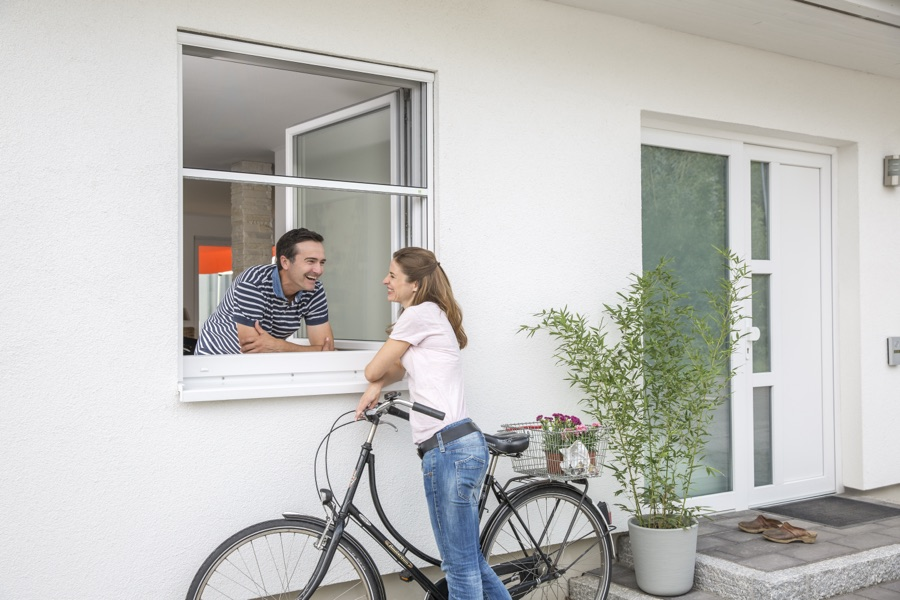
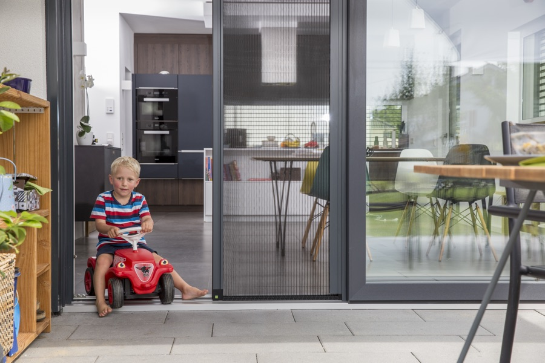
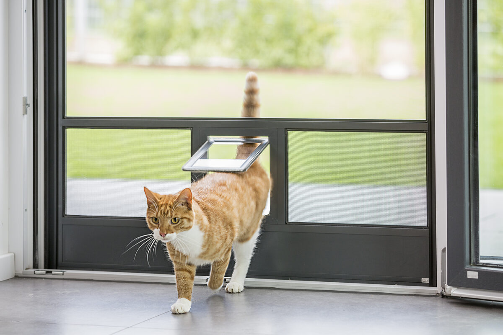
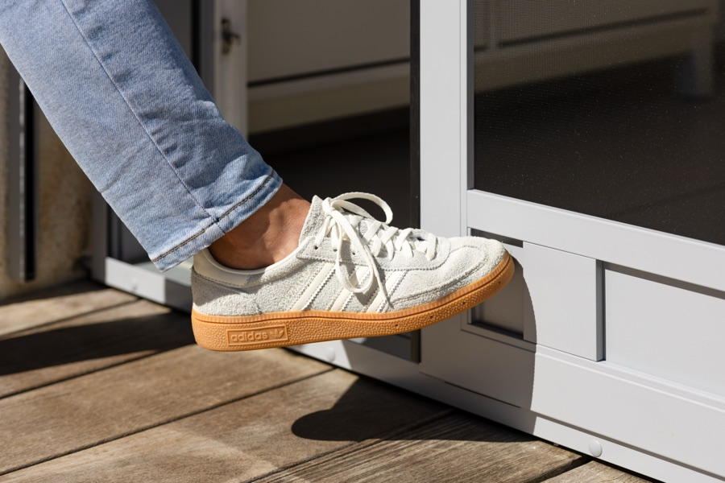

Insektenschutz für jede Öffnung – Premium-Produkte von Neher, von uns persönlich aufgemessen und fachgerecht montiert. Für Fenster, Türen, Dachfenster und Lichtschächte.
Wir sind Ihr regionaler Montage- und Servicepartner für Insektenschutz von Neher.
Sie erhalten Premium-Markenqualität Made in Germany – mit präzisem Aufmaß und fachgerechter Montage. Alles aus einer Hand, mit persönlichem Ansprechpartner.

Der Klassiker für Standardfenster. Wird einfach in die Laibung eingespannt – ohne Bohren, ohne Schrauben. Bei Bedarf werkzeuglos abnehmbar.
Sauber montiert, von außen kaum sichtbar – und bei Bedarf in Sekunden wieder entfernt. Perfekt für die meisten Fenstersituationen.

Wie ein zweiter Fensterflügel: Der Drehrahmen wird per Scharnier befestigt und lässt sich einfach öffnen – z. B. zum Lüften oder Reinigen.
Sie öffnen das Fenster bequem – auch wenn der Insektenschutz montiert ist. Ideal für Schlafzimmer und Küchen.

Frei pendelnder Insektenschutzrahmen, der sich nach beiden Seiten öffnen lässt – etwa für Fenster über der Küchenspüle oder Arbeitsplatte.
Auch dort komfortabel bedienbar, wo Sie nicht direkt ans Fenster herankommen. Bequem mit einer Hand zu bedienen.

Insektenschutz, der sich bei Nichtgebrauch unsichtbar in einer schlanken Kassette aufrollt. Optisch dezent und immer einsatzbereit.
Wenn Sie ihn nicht brauchen, sehen Sie ihn nicht. Wenn Sie ihn brauchen, ist er sofort da – ein dauerhaft elegantes Erscheinungsbild.

Die robuste Lösung für Balkon-, Terrassen- und Eingangstüren. Stabiler Aluminiumrahmen, leise schließend dank Magnetdichtung.
Eine Tür, die täglich genutzt wird – und trotzdem über Jahre wie neu funktioniert. Gemacht für Familien und Haustiere.

Beidseitig schwingend – kein Hebeln, kein Drücken. Ideal, wenn Sie häufig mit Tablett, Wäschekorb oder Werkzeug durchgehen.
Sie gehen einfach durch – die Tür macht den Rest. Perfekt für stark frequentierte Übergänge zur Terrasse.

Für besonders breite Öffnungen wie Hebe-Schiebe-Türen. Mehrteilige Schiebeanlagen laufen leise und präzise auf einer Schiene.
Auch raumhohe Hebe-Schiebe-Türen sind kein Problem – Sie öffnen Ihr Wohnzimmer zur Terrasse, ohne Insekten hereinzulassen.

Dezenter Insektenschutz im Faltenzug-Prinzip: Wird seitlich aufgezogen und läuft in einer flachen Bodenschiene. Auch für sehr breite Türen.
Eine elegante Lösung für moderne Architektur und große Glasflächen – fast unsichtbar, wenn er nicht gebraucht wird.

Speziell für Velux-, Roto- und vergleichbare Dachfenster. Das Rollo läuft sicher in seitlichen Schienen – ideal bei Schräge.
Auch in Dachzimmern können Sie endlich entspannt lüften – ohne nächtliche Mücken über dem Bett.

Die robuste, begehbare Abdeckung für Standardlichtschächte. Hält Laub, Schmutz und Insekten zuverlässig draußen.
Schluss mit Laub-Schaufeln und Insekten im Keller – einmal montiert, jahrelang Ruhe.

Integrierte Klappen, durch die Ihre Tiere selbstständig nach draußen können – ohne dass die Tür offen bleiben muss.
Tiere ein- und aussehen lassen, ohne ständig aufstehen zu müssen – und der Insektenschutz bleibt trotzdem dicht.

Stabile Trittplatten am unteren Türrahmen schützen das Gewebe vor Beschädigung – z. B. an häufig genutzten Terrassentüren.
Auch bei häufigem Tritt gegen die Tür bleibt der Insektenschutz intakt – ein Detail, das echten Unterschied macht.
Feine Bürstenleisten an den Kanten verhindern, dass auch kleinste Insekten durch winzige Spalten gelangen.
Wirklich dicht – auch dort, wo bewegliche Teile aneinanderstoßen. Kein Schlupfwinkel für Mücken.
Sanftes, sicheres Schließen per Magnet – kein Klappern, kein Hängenbleiben.
Die Tür schließt jedes Mal sauber – auch wenn Sie sie nur mit der Hüfte zudrücken.
Endlich keine zugeschlagenen Türen mehr: Soft-Close bremst die Tür sanft ab und schließt sie kontrolliert.
Ruhe im Haus, auch wenn Wind aufkommt oder Kinder durchsausen – die Tür schließt immer leise.
Auch Bögen, Trapeze, Schrägen oder Rundfenster sind kein Problem – Neher fertigt nach Ihrem Aufmaß auch ungewöhnliche Formen passgenau.
Auch architektonisch besondere Fenster bleiben nicht ohne Insektenschutz – wir finden eine Lösung, die exakt passt.
Insektenschutz soll sich ins Gesamtbild einfügen – nicht auffallen. Neher bietet ein breites Farbprogramm in drei Kategorien: Standardfarben ohne Aufpreis, Trendfarben und Sonderfarben auf Anfrage.
Die 10 meistgefragten Farben – sofort wählbar, kein Aufpreis. Sie decken den Großteil der Kundenwünsche ab.
Für Insektenschutzgitter
Für Lichtschachtabdeckungen
Aktuelle Farben mit Fokus auf Architekturtrends – von warmen Brauntönen bis zu Grüntönen und feinen Grauabstufungen. Individuell beschichtet, auf Anfrage bestellbar.
Alle Farben matt, außer RAL 9006 und 9007 (Glanz). Alle Angaben nach RAL.
Neben Standard- und Trendfarben bietet Neher auf Wunsch viele weitere Optionen – für besondere Anforderungen oder exakte Farbabstimmungen.
Das gesamte RAL-Farbspektrum ist bestellbar – auch Farben, die nicht in der Standard- oder Trendpalette enthalten sind. Für exakte Abstimmung auf Fensterrahmen oder Fassade.
Perl- oder Eisenglimmer-Effekte, Classic-Effekte, tiefmatte oder strukturierte Oberflächen – sowie Farben aus dem NCS-System. Für besondere Designanforderungen.
Verschiedene Holzdekore im Dekoralverfahren (z. B. Eiche, Nuss, Mahagoni) – ideal bei Holz- oder Holz-Alu-Fenstern. Hinweis: Beschlagteile können nicht in Dekoralfarben ausgeführt werden.
Nepexal ist eine hochwertige Pulverbeschichtung als Alternative zu Eloxal – gleichmäßige Oberfläche, weniger Reibung bei Rollos und Schiebeanlagen. Verfügbar in 6 Tönen:
Tipp: Wenn Sie unsicher sind, welche Farbe zu Ihren Fenstern passt, bringen wir beim Aufmaß-Termin gerne ein Farbmuster mit. So entscheiden Sie direkt vor Ort am Original.